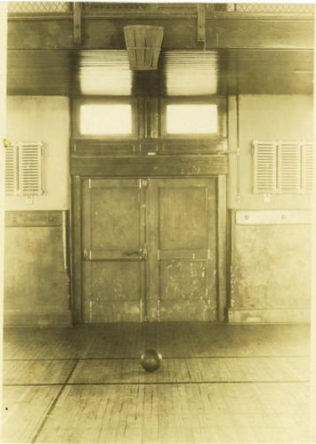
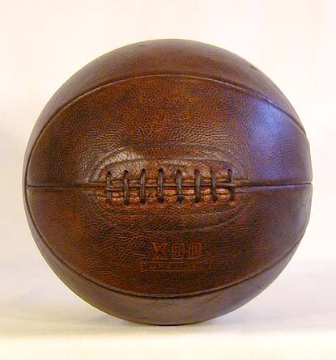
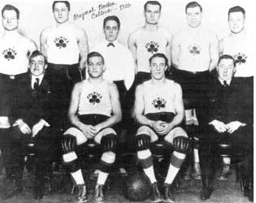

History
In early December 1891, Canadian Dr. James Naismith, a physical education professor and instructor at the International Young Men's Christian Association Training School[5] (YMCA) (today, Springfield College) in Springfield, Massachusetts was trying to keep his gym class active on a rainy day. He sought a vigorous indoor game to keep his students occupied and at proper levels of fitness during the long New England winters. After rejecting other ideas as either too rough or poorly suited to walled-in gymnasiums, he wrote the basic rules and nailed a peach basket onto a 10-foot (3.0 m) elevated track. In contrast with modern basketball nets, this peach basket retained its bottom, and balls had to be retrieved manually after each "basket" or point scored; this proved inefficient, however, so the bottom of the basket was removed, allowing the balls to be poked out with a long dowel each time.[1]
He divided his class of 18 into two teams of nine players each and set about to teach them the basics of his new game. The objective of the game was to throw the basketball into the fruit baskets nailed to the lower railing of the gym balcony. Every time a point was scored, the game was halted so the janitor could bring out a ladder and retrieve the ball. After a while, the bottoms of the fruit baskets were removed. The first public basketball game was played in Springfield, Massachusetts, on March 11, 1892.[2]
Basketball was originally played with a soccer ball. The first balls made specifically for basketball were brown, and it was only in the late 1950s that Tony Hinkle, searching for a ball that would be more visible to players and spectators alike, introduced the orange ball that is now in common use. Dribbling was not part of the original game except for the "bounce pass" to teammates. Passing the ball was the primary means of ball movement. Dribbling was eventually introduced but limited by the asymmetric shape of early balls. Dribbling only became a major part of the game around the 1950s, as manufacturing improved the ball shape. [1]
|  |  |
| First basketball court ever assembled. | First basketball used. |
Original Rules
There were only thirteen rules of "basket ball":
- The ball may be thrown in any direction with one or both hands.
- The ball may be batted in any direction with one or both hands.
- A player cannot run with the ball, the player must throw it from the spot on which he catches it, allowance to be made for a man who catches the ball when running at good speed.
- The ball must be held in or between the hands, the arms or body must not be used for holding it.
- No shouldering, holding, pushing, tripping or striking in any way the person of an opponent shall be allowed. The first infringement of this rule by any person shall count as a foul, the second shall disqualify him until the next goal is made, or if there was evident intent to injure the person, for the whole of the game, no substitute.
- A foul is striking the ball with the fist, violation of rules 3 and 4, and such as described in rule 5.
- If either side makes three consecutive fouls it shall count a goal for opponents.
- A goal shall be made when the ball is thrown or batted from grounds into the basket and stays there. If the ball rests on the edge and the opponent moves the basket it shall count as a goal.
- When the ball goes out of bounds it shall be thrown into the field and played by the person first touching it. In case of a dispute, the umpire shall throw it straight into the field. The "thrower-in" is allowed five seconds. If he holds it longer it shall go to the opponent. If any side persists in delaying the game, the umpire shall call a foul on them.
- The umpire shall be the judge of the men and shall note the fouls, and notify the referee when three consecutive fouls have been made.
- The referee shall be the judge of the ball and shall decide when the ball is in play, in-bounds, and to which side it belongs, and shall keep the time. He shall decide when a goal has been made and keep account of the goals with any other duties that are usually performed by a referee.
- The time shall be fifteen-minute halves, with five-minute rests between.
- The side making the most goals in that time shall be declared the winner. In the case of a draw, the game may, by agreement of the captains, be continued until another goal is made.[2]
First Proffesional Leagues
The first professional league was founded in 1898. Six teams took part in the National Basketball League, and the first champions were the Trenton Nationals, followed by the New York Wanderers, the Bristol Pile Drivers and the Camden Electrics. The league was abandoned in 1904. Then, many small championships were organized, but most of them were not as important as some teams who played for money against challengers.
The Original Celtics, for instance, are considered the "fathers of basketball" and were presented as "World’s Basketball Champions"; the players had to sign a contract to play with them, and Jim Furey organized matches as a circus, moving daily from town to town. The Celtics became the strongest team, and their successes lasted from 1922 until 1928, when the team disbanded due to ownership problems. The Original Celtics are sometimes incorrectly thought of as forebears of the current Boston Celtics of the NBA; in reality, they share only a name, as today's Celtics were not founded until 1946, nearly two decades after the demise of the Original Celtics. In 1922, the first all-African American professional team was founded: the Rens (also known as New York Renaissance or Harlem Renaissance). The Rens were the Original Celtics’ usual opponent, and for their matches a ticket cost $1.[16] They took part in some official championships and won the first World Professional Basketball Tournament in 1939. The team disbanded in 1949.
In the 1920s and 1930s, Eastern Basket Ball League (founded in 1909), Metropolitan Basketball League (founded in 1921) and American Basketball League (founded in 1925) were the most important leagues. [2]
